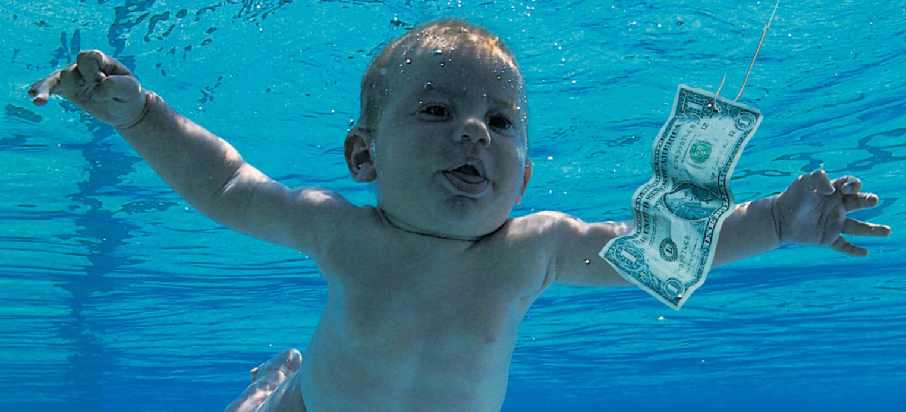
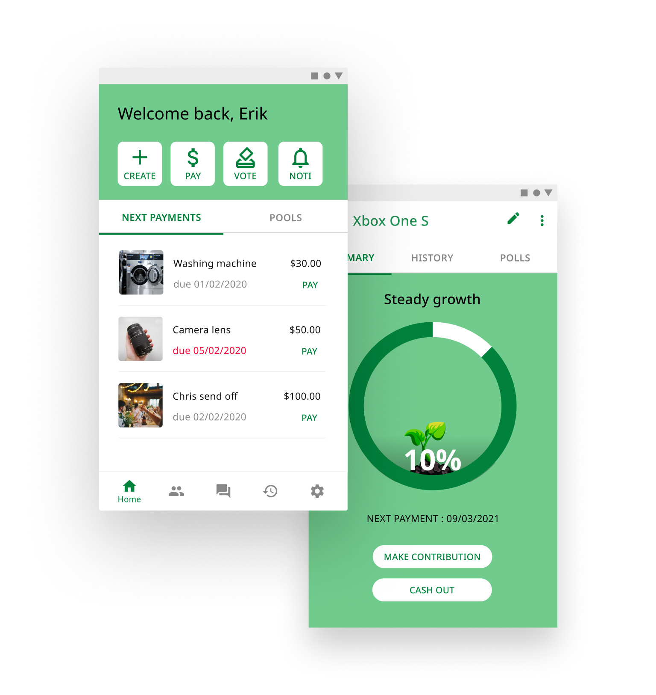

CashPool
| Money pooling app that lets users create groups and pool money towards shared goals. The app provides a platform with easy and transparent bookkeeping for the ideal money pooling experience. | |
| Case Study |
CashPool is a money pooling app that lets users create groups and pool money towards shared goals. The app provides a platform with easy and transparent bookkeeping for the ideal money pooling experience.


Table of Contents
Initial Hypothesis
“Students or young adults with limited resources who are part of a community often find it difficult to collectively arrange money for their goals.”
Goal
To create an application that allows users to create teams and pool money towards a common goal. The application will enable effective and engaging interaction between the users with high transparency.
Process
For this case study, I decided to follow the Design Thinking process, which is pictured below:

Phase 1: Emphatise
Cash pooling is an activity that involves multiple individuals, and therefore it is of vital importance to understand the human interaction dynamics involved in it to be able to leverage technology to enhance the process..
We have an initial hypothesis that there could be variation in the behavior of the users based on their age, occupation and level of income. To evaluate this, we conducted focus group workshops and interviews. (We included working adults and students in our interviews.)
Workshopping: 5 Focus Groups
The focus group sessions were used to simulate a live cash pooling activity within a group of friends. We also had external circumstances arise to simulate real-life situations.


The key findings of the Focus Groups were the following:
- Mutual trust was expected in the group (But people usually didn’t share how much money they had).
- Changing the money goal pooling required group discussion.
- Communication is key. Sometimes information was not relayed properly between people.
- Whether individual contributions should be visible to everyone was usually a group decision.
17 individual interviews
We had online interviews with users about their experience and expectations on money pooling. At the end of the interview, we gave the users cards describing relevant factors in a money pooling process. We asked them to rank them in importance.


The key findings from the individual interviews were:
- Varied level of commitment to cash pool.
- Preference of the transaction method is different.
- Choice of a leader varies (most responsible, eldest in the group, person who started the pool, person who wiill contribute the most…).
- Based on the goal and urgency, some people are open to borrowing the money from other users and adding it to the pool.
Key findings from card ranking
The card sorting helped identify the priority for key attributes in money pooling among teenagers and young adults:

Phase 2: Define
With detailed analysis of the user research, we were able to define:
- Two User Profiles
- Two User Roles
- A Task Organization Model
- A User Journey Map
User Profiles


Task Organization Model

User roles
It was evident from our research that there are two user roles in money pooling Leader and the member.
Leader
- Responsible for managing the money pool. They are part of the team and are selected by the team.
- Gets informed when pool activities are not following the schedule.
- Settles disputes.
- Handles the pooled money.
Member
- Joins the pool group and contributes money towards the common goal.
- Adds money to the pool.
- Checks the status of his contribution and pool.
- Raises issues.
User Journey Map
From the information gathered, we organized the user tasks and then created a User Journey Map to understand the users’ experience throughout the process.
Teenager Journey Map

Working Adult Journey Map

Phase 3: Ideate
With a detailed understanding of the user tasks, we started brainstorming ideas and sketching.


We used dot voting to define each feature, further brainstormed on them, and finally rearranged them taskwise to identify missing screens. We understood from the user analysis that working adults use desktop applications, so we included both web and mobile applications in the low fi prototype stage.

Phase 4: Prototype
We converted our rough sketches into lo-fi prototypes using Balsamiq. Main features:
- Pool creation & management
- Resolving conflicts through polling
- Pool Participation


Phase 5: Test
Usability Tests
We conducted 8 usability tests with 5 female and 3 male users, of which 5 belonged to the working adult’s profile and 3 to the student profile. One team member facilitating the interview, and the second member observed and took notes. The task document was shared through Google Docs and the prototype was tested in Figma while screen sharing.
Effectiveness
We defined the optimum amount of steps required to complete a task and kept it as a benchmark to evaluate the prototype. Any deviation from this was counted as a mistake.
The Web prototype showed better results for Task 1 and the Mobile one did better in Task 2.

Any elemental action done by the user was recorded and compared among the different tasks. This helped in identifying areas of the interface that were confusing for the user.
Efficiency
The Mobile prototype showed more efficiency.


User satisfaction

We used a standardized user satisfaction questionnaire to evaluate if the users liked the application.
We received more positive and convergent results for CashPool Web, whereas the results for CashPool Mobile were more negative and divergent.
Users reported a more satisfactory experience with the Web prototype.

Usability Issues
Mobile

Web


Final Designs

Improvements of Hi-fi Prototype over Lo-fi
Shortcuts to commonly used functions

Improved Button Label and Flow for Contribution

Project takeaways (TODO)
The following are key takeaways from the different phases of the project:
User Research
- Key insights about needs & behaviours
- Design appropriate features/flow
Ideation & Lo-fi Prototype
- Experimentation/ideas.
- Tried and tested several design elements → selecting from the best
- Better understanding of user behaviour
Hi-fi prototype
- Fine-tuning each component
- In-depth understanding
- Significant Improvement in interface